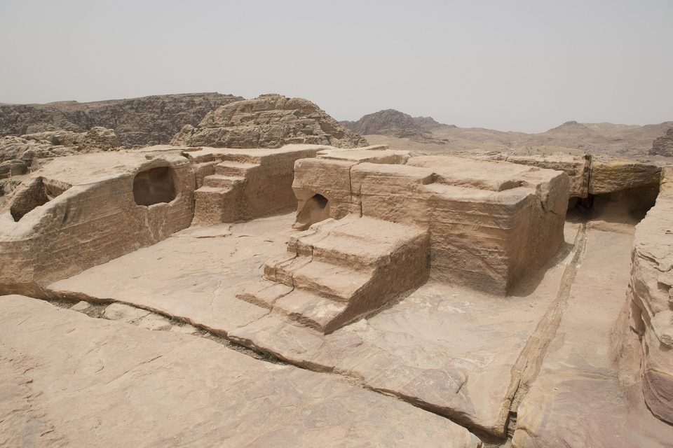

Jordan · Petra
Petra: High Place of Sacrifice audio guide
8 stops · 10 min
This guide is free
Every recorded stop plays here.
Nabataean altar high above Petra. Listen here, or get the Earwise app to play as you walk.
Stops
- 1
The processional stairway
At the foot of the steps that leave the main path on the left, just before the Theatre. This is stop 1 on the route.
Play0:00 / –:––Read along
These steps were cut by the Nabataeans. They lead up a narrow gorge to one of the most sacred places in their city: an open-air altar on a mountaintop, called the High Place of Sacrifice. The climb takes most people about three quarters of an hour.
For the Nabataeans, as for many peoples of the ancient Near East, gods were worshipped on high ground, close to the sky and in view of the land below. The way up was part of the worship. This stairway was a processional route, and worshippers climbed it carrying offerings, possibly with animals for sacrifice.
As you climb, notice how carefully the steps follow the line of the rock. In places they are cut into the solid sandstone. In others, low walls and stone blocks fill the gaps. Look out for little channels and basins in the rock as well; the Nabataeans caught every drop of rain that fell on these slopes.
Stay a moment. Pause at the turns and look back. Each pause shows you a little more of the valley floor below, the tombs on the opposite cliffs, and the colours of the rock.
- 2
The two obelisks
On the ridge near the top of the stairway, beside the tall stone pillars. This is stop 2 on the route.
Play0:00 / –:––Read along
Look at these two tall pillars of rock. Each stands just over six metres high, and they are about thirty metres apart, lined up east to west. What makes them remarkable is how they were made. They were not built from blocks and set up here. The Nabataeans cut away the whole top of the ridge around them, removing a vast amount of rock and leaving only the two pillars standing.
The flattened ground marks where the rock was removed. Imagine the work: weeks or months of quarrying with hand tools, just to leave these two shapes behind.
Why? The Nabataeans often represented their gods not with statues but with plain standing stones. These obelisks probably follow the same idea. The park authority suggests that they stand for one god or for two. Two of the most important were Dushara, the chief god of the Nabataeans, and al-Uzza, a great goddess. But no inscription here tells us for certain who was honoured.
Whatever their meaning, the obelisks marked this ridge as holy ground on the way up to the altar.
- 3
The High Place altar and triclinium
On the summit platform, at the edge of the long rectangular courtyard cut into the rock. This is stop 3 on the route.
Play0:00 / –:––Read along
You have reached the top. This flat, rectangular courtyard was cut out of the mountaintop. Benches carved along its sides suggest that worshippers gathered here for shared meals, perhaps eating the meat of the sacrifices. In the middle stands a low platform, perhaps for the person leading the ceremony.
Now look to the west end. Steps lead up to an altar cut from the rock. Here, sacred stones representing the gods most likely stood. Beside it is a raised platform with a round basin, which may have held rainwater for purification, and a hollow with a drain. That channel probably carried away the blood of sacrificed animals. Offerings of wine or other liquids were made here as well.
Then look out. From the edge, the view takes in much of Petra: the valley floor, the long cliffs of tombs, and the town of Wadi Musa beyond the hills. To the southwest stands the white-domed shrine on Jebel Haroun, traditionally the burial place of Aaron, brother of Moses.
Standing here, you can understand why the Nabataeans chose this spot. Between earth and sky, with the whole city at their feet, it must have felt very close to the gods.
- 4
The Lion Fountain
On the path descending into Wadi Farasa, beside the large carved lion on the rock face. This is stop 4 on the route.
Play0:00 / –:––Read along
Look at the rock face beside the path. A large lion is carved here in relief, though centuries of weather have worn away its features. This was a fountain. Water was led along a channel and spouted from the lion's mouth into a basin below. The park authority says the water was brought from the spring of Ayn Braq.
Imagine coming down from the summit on a hot day, or climbing up with an offering, and finding fresh water flowing here. It may well have been placed here to refresh pilgrims on the sacred way.
The lion itself was a powerful image. Lions guard doorways and fountains across the ancient world, and here it watched over a path leading to an altar.
Look at the rock above and around the lion for traces of the channel. Even here, high in the mountains, the Nabataeans managed to bring water exactly where they wanted it.
- 5
The Garden Hall
In front of the small temple-like facade with two columns, with a large tree nearby. This is stop 5 on the route.
Play0:00 / –:––Read along
This simple building is often called the Garden Temple or Garden Hall. Its front is a portico with two columns standing between walls of rock. Behind it is a plain room. It is one of the most elegant small facades in Petra, and the shade of the tree beside it makes it a welcome place to rest.
What was it for? It may not have been a temple at all. Above and behind it, the Nabataeans built a large cistern to store water, and a wall with channels fed it. A cistern nearby held the water, and the building beside it may have housed the guardian who looked after the supply.
The name "garden" comes from the green that grows on the terrace in front in spring. In a land of bare rock, every patch of green meant water, and water was precious. Whoever lived or worshipped here had the job of making sure that the water stored in these mountains could be drawn on through the long dry summer.
- 6
The Roman Soldier Tomb and its triclinium
In the open area between the tomb facade with three statue niches and the hall cut into the cliff opposite. This is stop 6 on the route.
Play0:00 / –:––Read along
Look up at the facade with three niches between its columns. Each niche once held a carved figure. The central one, though headless, shows the armour of a Roman officer, with a breastplate. That figure gave the tomb its name. But scholars are not sure the man buried here was Roman. One account notes that the figures have long hair, a Nabataean style, and suggests this was a Nabataean of high rank shown in Roman-style dress.
Now turn around. Facing the tomb across the open space is a hall carved into the cliff. This was a triclinium, a dining room for funeral feasts. Step inside if it is open and look at the walls. They are carved with half-columns, and the rock shows natural bands of red, white and blue-grey. It is one of the most beautiful interiors in Petra.
The space where you stand was once a courtyard with columns on its sides, linking the tomb and the hall into a single complex. It was built in the second half of the first century AD. Families came here to honour the dead with meals, gathering in the hall that faced the tomb.
- 7
The Renaissance Tomb
Further down the valley, facing the tomb with three urns on its pointed gable. This is stop 7 on the route.
Play0:00 / –:––Read along
This is one of the most striking tombs in Wadi Farasa. Look at the facade. It is framed by flat pilasters with Nabataean capitals, and it is crowned by a pointed gable with three urns, one at its peak and one at each corner. The proportions are calm and balanced, and its modern name reflects that classical elegance.
According to the park authority, the inside was excavated in 2003. Fourteen graves cut into the floor were found. Most had been robbed long ago, perhaps in medieval times, but bones, pottery and coins remained. Two graves had inscribed tombstones, and one carries the name Taymu, son of Wahabillahy. The tomb was probably begun around the second half of the first century AD.
Look at how the colours of the rock run through the facade, in waves of red, pink and white. The Nabataeans chose their cliffs carefully, and here the stone itself adds to the decoration.
- 8
The Zantur mansions
On the path near the top of the Zantur hill, where the valley opens out. This is stop 8 on the route.
Play0:00 / –:––Read along
On the hill here, Swiss archaeologists have uncovered a group of Nabataean houses. The largest was a grand mansion built in the early first century AD, with many rooms set around courtyards. This was a home for a wealthy family, perhaps one of the richest in Petra.
Its walls were plastered and painted. One room was decorated with paintings that the park authority compares to the style of wall painting at Pompeii, imitating marble panels and architecture. The Nabataeans were wealthy traders, and their homes show how much they borrowed from the art of the wider Roman world.
Excavation here is slow, careful work: walls are traced stone by stone, and painted plaster is pieced back together from fragments. Much of what we know about how wealthy Nabataeans lived comes from digs like this one.
From this hill, Petra's grand tombs and temples were in sight. But the houses on Zantur tell a more everyday story: families eating, sleeping and entertaining in rooms painted to show off their good taste.
On the map
All 8 stop pins for this guide are marked. Open map